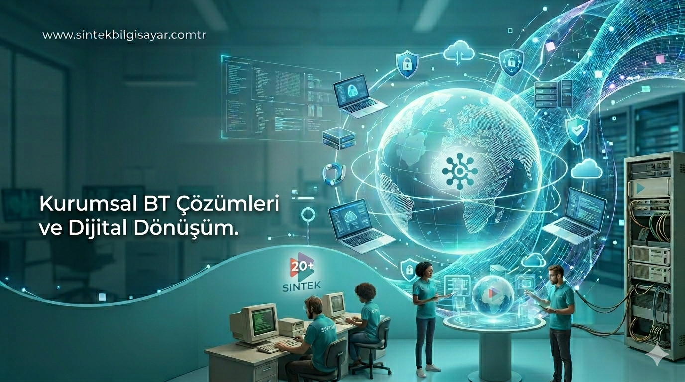

Dijital dönüşümde köklü bir geçmiş, doğru bir gelecek demektir.
Sintek Bilgisayar olarak, bilişim dünyasının dinamik yapısını çeyrek asrı aşan bir saha tecrübesiyle birleştiriyoruz. 14 yıllık Sintek Bilgisayar kurumsal kimliğimizle; 1998 yılından itibaren süregelen 28 yıllık ERP / Ticari Yazılım tecrübemizi ve mali mevzuata dayalı mesleki yeterliliğimizi harmanlayarak müşterilerimize bütünleşik hizmetler sunmaktayız.
İşletmelerin dijital kalbi olan ERP (Kurumsal Kaynak Planlama) ve Ticari Yazılım çözümlerinde, sadece teknik bir tedarikçi değil, stratejik bir çözüm ortağıyız. 1998'den bu yana biriktirdiğimiz sektörel bilgi birikimimiz sayesinde; muhasebeden envanter yönetimine, finansal raporlamadan karmaşık SQL tabanlı veritabanı optimizasyonlarına kadar her aşamada derinlemesine çözümler üretiyoruz.
Dijitalleşmenin sadece veri yönetimi değil, insan kaynağının yönetimi olduğunun bilincindeyiz. Uzmanlık alanlarımızı İnsan Kaynakları ve Bordro Yönetimi süreçleriyle genişleterek; personel özlük işlerinden karmaşık bordro hesaplamalarına, SGK bildirimlerinden yasal uyumluluk süreçlerine kadar işletmenizin operasyonel yükünü modernize ediyoruz. Mali mevzuat yeterliliğimizle, bordro süreçlerinizi hatasız ve mevzuata tam uyumlu hale getiriyoruz.
GİB standartlarına tam uyumlu, hızlı ve güvenli bir e-Dönüşüm süreci için gerekli tüm teknik altyapıyı sağlıyoruz. Geniş hizmet yelpazemizle işletmenizin kağıtsız ofis hedefine ulaşmasını sağlıyoruz:

1998'den bugüne değişen teknolojik trendleri analiz ederek işletmenize en uygun mimariyi kuruyoruz.
Yazılım çözümlerimizi teknik gerekliliklerin ötesinde, güncel mali mevzuat ve İK standartlarına göre kurguluyoruz.
MS SQL veritabanı yönetimi, veri optimizasyonu ve sistem entegrasyonları konusundaki uzmanlığımızla karmaşık sorunlara profesyonel çözümler üretiyoruz.
Teknik bağlantı sorunlarından sistem güncellemelerine kadar her adımda operasyonel sürekliliğinizi sağlıyoruz.
İhtiyaçlarınızı anlayıp en uygun çözümü sunmak için buradayız.